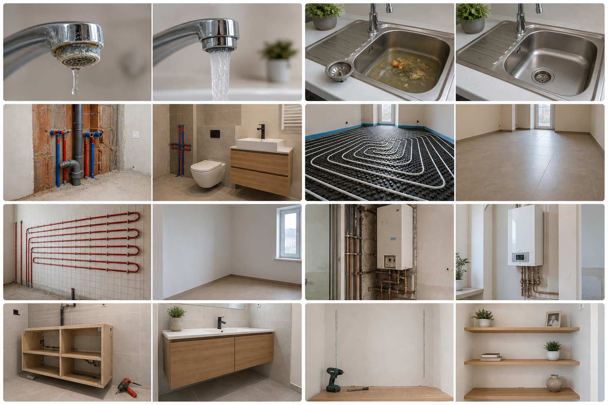

Vízszerelés - csaptelep csere
Előtte: régi, csöpögő csap
Utána: új csaptelep, tiszta bekötés
Referencia munkák
Fotós példák vízszereléshez, duguláselhárításhoz, fürdőszobához, fűtéshez, kazánhoz és bútor összeszereléshez.

Előtte-utána képek
Átlátható példák javításra, kivitelezésre és otthoni szerelésre.